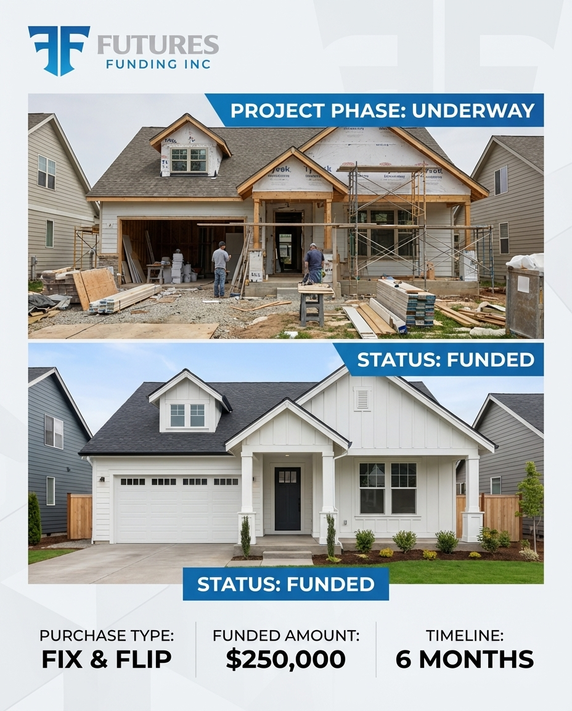
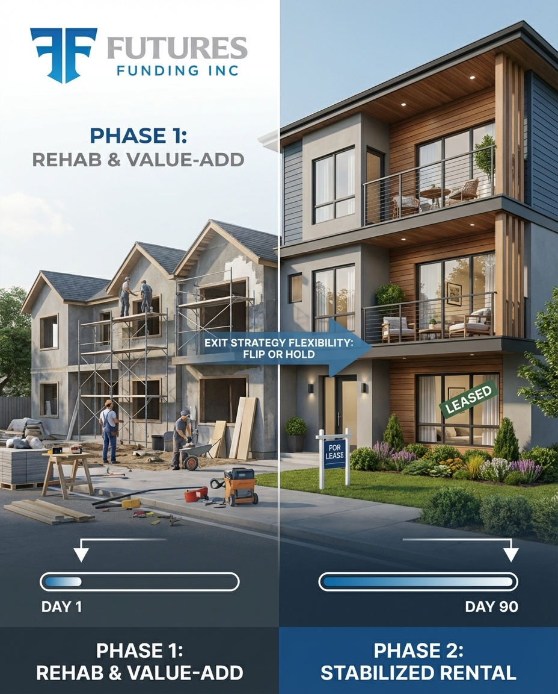

First-pass Futures Funding creative concepts with paired captions.
Trying to close your first investment property without the right financing usually ends the same way: slow approvals, confusing terms, and a deal that slips away. Futures Funding is built for real estate investors who need a lender that understands the property, the timeline, and the exit plan. If you have a solid deal, we’ll help you move with more confidence and less noise.
Tying up too much of your own cash in the purchase can kill the rest of the project before rehab even starts. Smart investors protect liquidity so they can finish the job, handle surprises, and stay ready for the next opportunity. Futures Funding helps structure capital around the deal so you can keep moving like an operator—not like someone constantly scrambling for cash.
Some deals don’t wait for conventional underwriting. When the seller wants certainty, the property needs work, or the window is short, you need financing built for investor timelines—not retail mortgage timelines. Futures Funding helps serious borrowers move faster when the deal is worth chasing.
A real estate investment loan shouldn’t feel like a generic mortgage conversation. The numbers, timeline, rehab scope, and exit strategy matter. Whether you’re planning to flip, refinance into a rental, or stabilize and hold, the financing should match the business plan. That’s the difference between filling out forms and working with a lender that actually understands investor deals.
You don’t need more vague promises. You need a lender that tells you what works, what doesn’t, and what to have ready. Futures Funding keeps the process practical: clear expectations, direct communication, and financing built for real estate investors—not borrowers trying to fit into a consumer mortgage box. That means fewer surprises and a cleaner path from opportunity to closing.

Once you’ve done a few deals, you stop shopping for slogans. You want a lending partner that understands timelines, scope, draw management, and the need to keep your pipeline moving. Futures Funding is designed for investors who want to close, execute, exit, and get back in the market without unnecessary friction.
Investment properties don’t belong in a retail mortgage process. If the property needs work, the timeline is tight, or the plan is strategic, you need financing that’s made for investor deals from day one. Futures Funding helps cut through the back-and-forth so you can focus on the property—not a process that was never built for you.
Anybody can say “fast.” The real question is whether the loan structure actually makes sense for the deal. Futures Funding focuses on both: moving quickly and keeping the financing aligned with your property, timeline, and exit. Because a fast yes to the wrong structure is still the wrong structure.
The right financing does more than help you buy the property. It helps you execute the whole plan. Acquisition. Rehab. Stabilization. Refi or sale. Futures Funding is built for investors who look at deals as systems—not one-off transactions. If the numbers work and the strategy is clear, we’re here to help you move.

Investor lending is full of flashy claims. But when it’s time to actually close, what matters is simple: does the lender understand the asset, the timeline, and the borrower’s plan? Futures Funding is for investors who care more about executable deals than marketing noise. If you want a practical lending conversation, let’s talk.